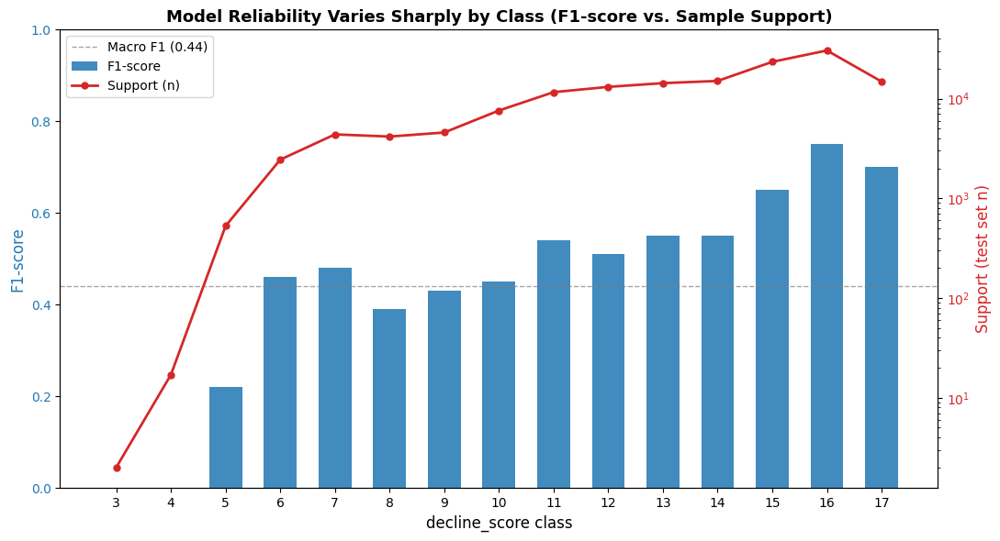
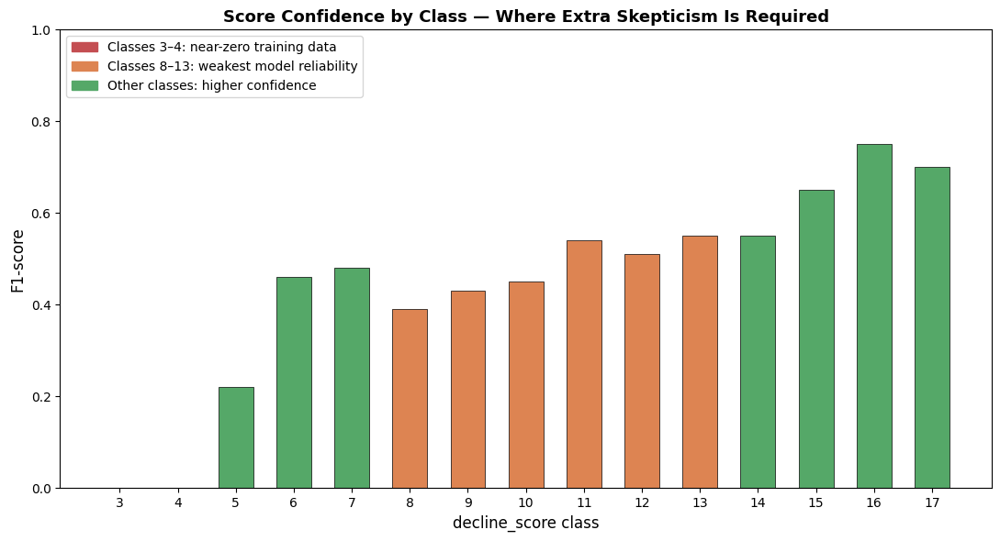
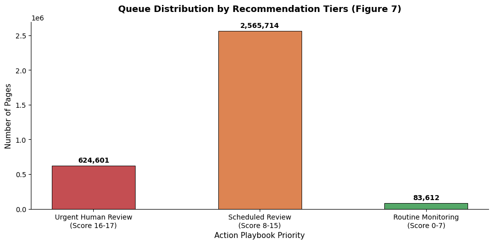
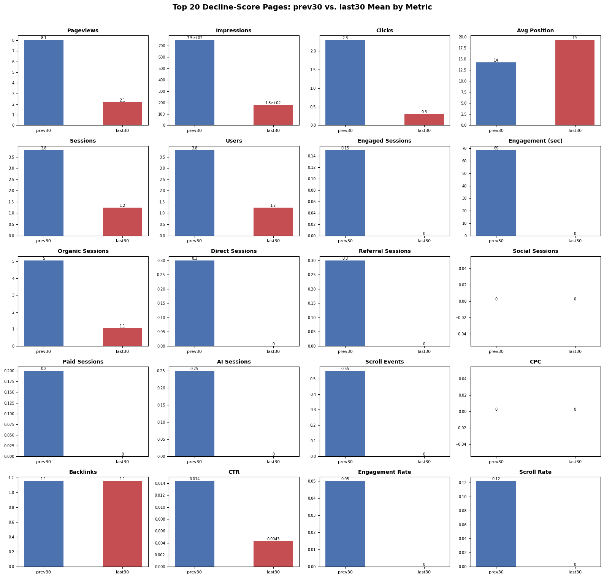
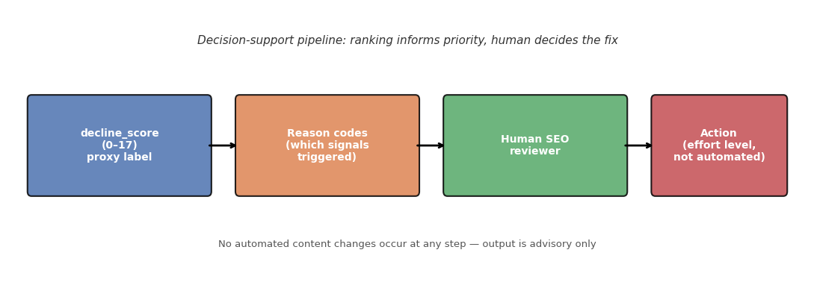
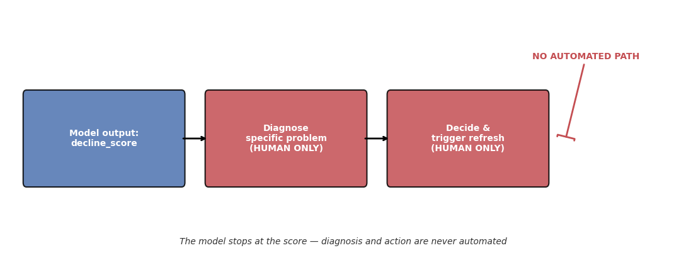
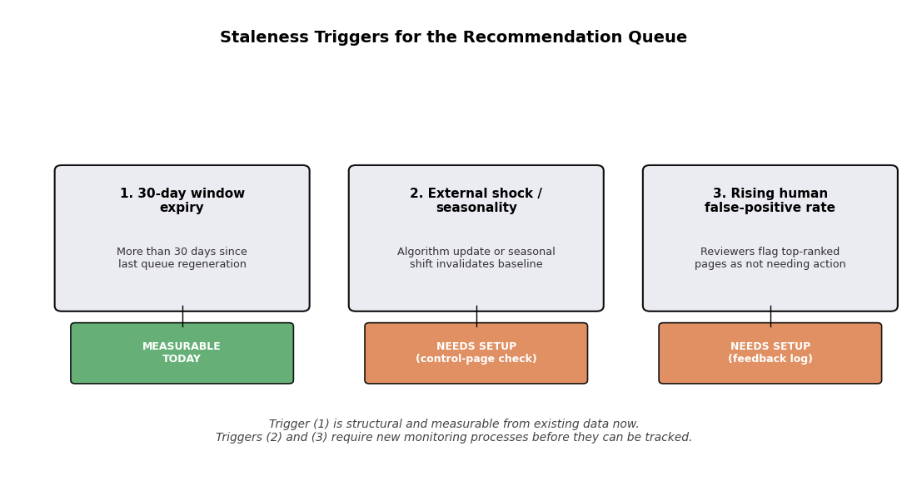

Abstract
This project follows FlyRank lane 2 brief. SEO teams manage far more pages than they can manually re-check for decline. This project builds decline_score, a rule-derived proxy label (0–17) counting how many of 17 performance signals — search visibility, click-through rate, engagement, and traffic across six acquisition channels — moved in a negative direction between a prior 30-day window and the most recent 30 days. A multi-class classifier is trained to predict this label from prior-window features alone, and is evaluated under a client-holdout split so that no client's content is seen in both training and testing.
A random split was found to inflate the model's macro F1 to 0.582, traced to heavy overlap between train and test content. The honest, client-grouped evaluation puts macro F1 at 0.444 and ROC-AUC at 0.913 — reliable at the extremes of the score range, weaker in the middle. The output is packaged as a ranked, reason-coded action playbook with explicit confidence tiers, intended strictly as decision support for a human reviewer, never as an automated content-change trigger.
Question
The research question and the decision it supports.
Decision: flag which pages need a content refresh, so a human reviewer knows where to look first.
Who acts: an SEO team or content owner who cannot manually audit every page's analytics on a recurring basis.
Improvement: replaces a full manual sweep with a short, ranked list — a human still inspects each flagged page and decides the fix, but no longer has to find the candidates by hand.
False positive
A refresh is recommended for a page that was actually fine.
Cost: wasted review time and effort on unnecessary work.
False negative
A genuinely declining page is missed entirely.
Cost: continued traffic and revenue loss as the page falls further out of search relevance.
What this can and cannot claim
This is decision support. It ranks and flags; a human with domain expertise still diagnoses the specific problem and decides the fix.
It will never:
- Predict Google's core algorithm changes — it observes how a page reacted, not what Google will do next.
- Prove refresh causes recovery — it can show traffic dropped alongside a lack of refresh, not that refresh was the only variable.
- Guarantee rankings — it can support a case for improvement, not control or predict a specific position.
- Auto-refresh content — it outputs a decision signal only, never an action.
- Fix SEO issues directly, or identify who visits a page.
- Claim certainty — it is trained on a limited time window, not a full year of seasonal behavior.
Data
Which release, which tables, date windows, what was excluded and why.
Release: FlyRank/internship-warehouse on Hugging Face.
Tables used: dim_content, fact_content_daily_performance, merged for feature construction.
Date window: the analysis window spans 2026-04-01 through 2026-06-30 — a 60-day prior period (April–May) compared against the most recent 30 days (June) to build every prev30 / last30 feature pair and the decline_score label itself.
Excluded: dim_client (client identity kept out of the feature set entirely — see Methodology); fact_content_query_90d, which was already feature-engineered upstream and covered far fewer rows than the daily-performance table.
Methodology
Assumptions, features, label definition, baseline, validation design, leakage checks.
Label definition
decline_score (0–17) is a proxy label, not a model output. One point is added for each of 17 independent conditions where the last-30-day value is no better than the previous-30-day value:
RC01gsc_clicks_last30 ≤ prev30RC02gsc_impressions_last30 ≤ prev30RC03gsc_avg_position_last30 ≥ prev30 (higher = worse)RC04ctr_last30 < prev30RC05engagement_rate_last30 ≤ prev30RC06scroll_events_rate_last30 ≤ prev30RC07ga4_pageviews_last30 ≤ prev30RC08ga4_users_last30 ≤ prev30RC09ga4_total_engagement_sec_last30 ≤ prev30RC10sessions_organic_last30 ≤ prev30RC11sessions_direct_last30 ≤ prev30RC12sessions_referral_last30 ≤ prev30RC13sessions_social_last30 ≤ prev30RC14sessions_paid_last30 ≤ prev30RC15sessions_ai_last30 ≤ prev30RC16scroll_events_last30 ≤ prev30RC17cpc_last30 ≤ prev30Higher score → more signals agree the page is declining → higher review urgency.
Features
All prev30 and last30 aggregates from GSC (impressions, clicks, average position, CTR) and GA4 (pageviews, sessions, users, engaged sessions, total engagement time, scroll events and rate), plus sessions split across six channels (organic, direct, referral, social, paid, AI), CPC, backlinks, and days since last content update. client_hash_id, content_hash_id, and both content date fields are retained only for grouping and traceability — never passed to the model as features.
Baseline
decline_score is itself derived directly from the rule above — it is not a model prediction. There is no separate baseline model to compare against; the classifier's job is to predict this rule-derived label from prev30-only features, and its accuracy against that label is the honest result reported in Section 4.
Validation design — client holdout
| Total unique clients | 27 |
| Training clients | 21 (3,127,466 rows) |
| Testing clients | 6 (146,461 rows) |
| Client overlap, train ↔ test | 0 |
Leakage check
Every feature column is a prev30/last30 window aggregate or a static dim_content field — nothing extends past the last30 window, and no product/QA flag column exists in the feature set. Row-level leakage was found, not in the features themselves, but in how rows were split: a plain random split lets repeated snapshots of the same content item land on both sides. Grouping the split by client (equivalently, by content, since each content item belongs to exactly one client) removes this — confirmed directly below.
Confirmed on the reported split: 33,448 unique content IDs in train, 1,958 in test, 0 overlapping (0.00%).
Results vs. baseline
Model vs. baseline, same split, the honest table.
A Random Forest (10 estimators, balanced class weight) was trained on prev30-only features and evaluated on the held-out client set. Reported here is the single honest run — the client-grouped split — since that is the number that should govern trust in every downstream recommendation.
| class | precision | recall | f1-score | support |
|---|---|---|---|---|
| 3 | 0.00 | 0.00 | 0.00 | 2 |
| 4 | 0.00 | 0.00 | 0.00 | 17 |
| 5 | 0.32 | 0.17 | 0.22 | 528 |
| 6 | 0.40 | 0.53 | 0.46 | 2,444 |
| 7 | 0.43 | 0.54 | 0.48 | 4,380 |
| 8 | 0.39 | 0.39 | 0.39 | 4,165 |
| 9 | 0.41 | 0.44 | 0.43 | 4,576 |
| 10 | 0.46 | 0.44 | 0.45 | 7,599 |
| 11 | 0.50 | 0.58 | 0.54 | 11,618 |
| 12 | 0.52 | 0.50 | 0.51 | 13,127 |
| 13 | 0.55 | 0.54 | 0.55 | 14,309 |
| 14 | 0.55 | 0.55 | 0.55 | 15,054 |
| 15 | 0.67 | 0.63 | 0.65 | 23,393 |
| 16 | 0.71 | 0.80 | 0.75 | 30,413 |
| 17 | 0.87 | 0.58 | 0.70 | 14,836 |
| accuracy | 0.60 | 146,461 | ||
| macro avg | 0.45 | 0.45 | 0.44 | 146,461 |
| weighted avg | 0.61 | 0.60 | 0.60 | 146,461 |
urgent tier mid-confidence tier near-zero training data

Limitations
What this work cannot claim.
The leakage mechanism, and its consequence
Under a standard random split, multiple time-series snapshots of the exact same content items are scattered arbitrarily across train and test. As a result, approximately 97.38% of test-set content already existed in training with highly similar historic features. This inflated macro F1 to an unrealistic 0.5821. Grouping strictly by client (so unseen content is genuinely unseen) drops this to an honest 0.444 — the model can no longer rely on having memorized a specific page's behavior.
Any performance number quoted for this project should be the client-holdout figure. A random-split score for this task is not a valid estimate of real-world performance.
Reliability varies sharply by class
Classes 3 and 4 have almost no training examples (2 and 17 respectively) and score 0 across precision, recall, and F1 — this is a data volume ceiling, not a fixable model defect. The middle of the range (roughly 8–13) is weak for a different reason: the same aggregate score can arise from many different combinations of which specific conditions triggered, so the feature pattern per class is far less consistent even with tens of thousands of examples.

Bounds on what can be claimed
- Trained on a single 90-day window — no coverage of longer seasonal cycles.
- Observational, not causal — a correlation between non-refresh and decline is not proof refresh is the fix.
- Scoped to the 27 clients evaluated — not validated against a client base outside this portfolio.
Ranked recommendations
The action playbook output — the paper's recommendations section.
The queue is sorted by how strongly the available signals agree that a page has declined — not by a predicted content strategy. It resolves into three tiers:
| Tier | Score | Pages | Action |
|---|---|---|---|
| Urgent human review | 16–17 | 624,601 | Look at these pages immediately. |
| Scheduled review | 8–15 | 2,565,714 | Add to the monthly diagnostic queue. |
| Routine monitoring | 0–7 | 83,612 | No immediate action required. |

At the extremes of the score range, evaluated accuracy is highest (class 16–17 F1 of 0.70–0.75), so a reviewer can act on those rankings with more confidence. In the middle of the range, the same score can arise from very different combinations of triggered reason codes, and accuracy is weaker (F1 0.39–0.55) — "what to do first" there means look here next, then verify manually, not treat the order as decisive.

How the queue reaches a person

What must be checked, and what is never automated
A reviewer checks the score, then looks into the specific reason codes behind it to identify the actual problem — the model does not diagnose this. Scores in classes 3–4 (near-zero training data) or the 8–13 range (weakest reliability) should be treated with added skepticism before acting.
Never automated: triggering a refresh, or deciding the specific type of problem a page has. Both remain a human judgment call, full stop — not a "review carefully" caveat but a hard boundary.

Artifacts the paper embeds
Generated charts this deployed page shows, collected here for reference.
Figures 1–2, 5, and 7 support Section 6; Figures 3 and 4 support Sections 4 and 5 respectively. One additional forward-looking artifact — not yet backed by observed monitoring data — is included below.
